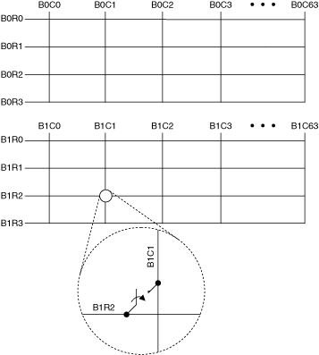
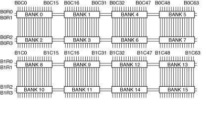
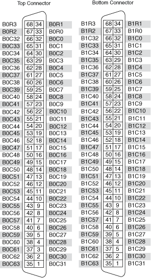

The NI TB-2649 terminal block creates a 1-wire dual 4×64 matrix topology with the NI PXI/PXIe-2531 (NI 2531). The following figure represents the NI 2531 in the 1-wire dual 4×64 matrix topology.

For bank 0, both the scanning command, b0r2->b0c1;, and the immediate operation, niSwitch Connect Channels VI or the niSwitch_Connect function with parameters b0r2 and b0c1, result in the following connection:
signal connected to B0R2 is routed to B0C1
For bank 1, both the scanning command, b1r2->b1c1;, and the immediate operation, niSwitch Connect Channels VI or the niSwitch_Connect function with parameters b1r2 and b1c1, result in the following connection:
signal connected to B1R2 is routed to B1C1
|
Note While you can, for example, connect B0R1 to B0C0, you cannot connect B0R1 directly to B1C1 in this topology. |
The NI TB-2649 terminal block connects banks of the NI 2531 to create the 1-wire dual 4×64 matrix topology.
The following figure illustrates how the native banks of the NI 2531 connect using the NI TB-2649 to create the 1-wire dual 4×64 matrix topology.

The following figure identifies the pins for the NI TB-2649 connectors.

The following figure identifies the pins for the NI 2531.